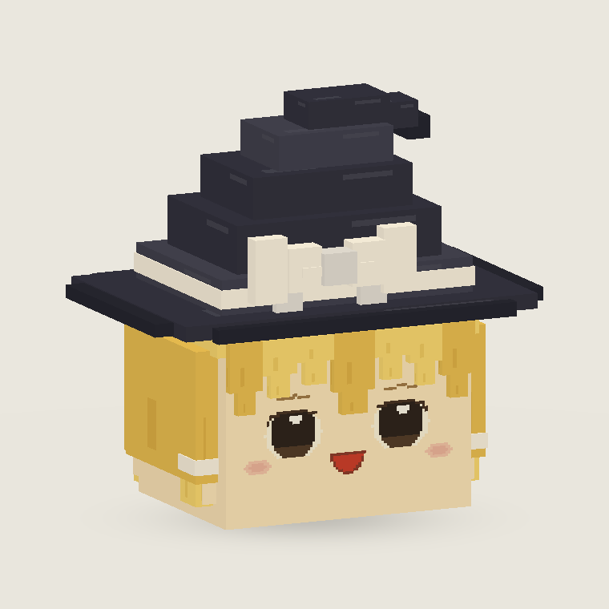

<!doctype html><html lang="zh-CN"><meta charset="utf-8"><meta name="viewport" content="width=device-width,initial-scale=1"><title>魔理沙 · 合并效果试验</title>
<style>*{box-sizing:border-box}body{margin:0;background:#eae7de;color:#3d3831;font-family:'Microsoft YaHei',sans-serif}main{max-width:1400px;margin:auto;padding:28px}header p,p{color:#797061;font-size:13px;line-height:1.8}h1{font-size:26px;margin:6px 0}h2{font-size:16px}.layout{display:grid;grid-template-columns:300px 1fr;gap:24px}.panel{padding:18px;background:#f6f2e9;border-radius:12px}button,a{font:13px 'Microsoft YaHei',sans-serif;border:1px solid #cfc6b6;background:#fbf8f1;color:#514638;border-radius:7px;padding:10px 12px;cursor:pointer;text-decoration:none}button.active{background:#5c6045;color:white}.presets button{display:block;width:100%;text-align:left;margin-bottom:8px}.presets small{display:block;font-size:11px;line-height:1.6;margin-top:5px;opacity:.8}label{display:block;font-size:12px;margin:15px 0 5px}input[type=range]{width:100%;accent-color:#7c8254}select{width:100%;padding:8px;background:#fffaf0;border:1px solid #cfc6b6;border-radius:5px}.stage{position:relative;height:680px;min-height:420px}canvas{width:100%;height:100%;touch-action:none;cursor:grab}.views{display:flex;gap:8px;justify-content:center;flex-wrap:wrap}.fallback{position:absolute;inset:20px;text-align:center;pointer-events:none}.fallback img{width:100%;max-height:90%;object-fit:contain}.links{display:flex;gap:10px;flex-wrap:wrap;margin:22px 0}.notice{font-size:12px;margin:12px 0;color:#877c69}@media(max-width:800px){main{padding:16px}.layout{grid-template-columns:1fr}.stage{height:440px;grid-row:1}.panel{order:2}.presets{display:flex;gap:5px}.presets button{width:33%;font-size:12px}.presets small{display:none}}
</style>
<main><header><h1>魔理沙 · 三组合并效果</h1><p>先分别尝试眼皮、视线、嘴形和刘海，再组合为三个候选。沿用去底层体型；现有版本都保留。</p></header>
<div class="layout"><aside class="panel"><div class="presets"><button data-preset="0" class="active">01 · 活泼开心<small>略向上看、圆底笑口、收尖中分</small></button><button data-preset="1">02 · 悠闲亲近<small>眼皮放松、小笑嘴、错落偏分</small></button><button data-preset="2">03 · 好奇期待<small>双眼轻瞟、轻提眉、中等笑口</small></button></div>
<h2>分别试一试</h2><label>眼皮开合 <output id="apertureValue"></output></label><input id="aperture" type="range" min="0" max="1" step=".01" aria-label="眼皮开合">
<label>向左看 / 向右看</label><input id="gazeX" type="range" min="-1" max="1" step=".01" aria-label="水平视线">
<label>向上看 / 向下看</label><input id="gazeY" type="range" min="-1" max="1" step=".01" aria-label="垂直视线">
<label>闭口笑 / 张嘴笑</label><input id="mouth" type="range" min="0" max="1" step=".01" aria-label="嘴巴开合">
<label for="hair">刘海</label><select id="hair"><option value="0">收尖中分</option><option value="1">错落偏分</option></select>
<div class="links"><button id="blink">试试眨眼</button><button id="restore">恢复本组表情</button></div>
<p class="notice">下方模型文件对应三组默认效果。滑块用于视觉试验，尚未接入 MC 动态实体。</p></aside>
<section><div class="stage"><canvas id="model" aria-label="魔理沙表情与刘海互动模型"></canvas><div class="fallback" id="fallback"><p id="status">正在加载模型…</p></div></div><div class="views"><button data-view="front">正面</button><button data-view="three">斜侧面</button><button data-view="side">侧面</button><button id="reset">视角复位</button></div></section></div>
<div class="links"><a href="04-round-eyes/comparison.png">新增：圆眼对比</a><a href="04-round-eyes/preview.html">圆眼旋转预览</a><a href="combined-options.png">三组合并效果对比</a><a href="component-trials.png">12 组单项试验</a><a href="01-lively/marisa.bbmodel">01 模型</a><a href="02-relaxed/marisa.bbmodel">02 模型</a><a href="03-curious/marisa.bbmodel">03 模型</a></div>
</main><script src="face_layers.js"></script><script src="raster.js"></script><script src="model-data.js"></script><script src="lab.js"></script></html>
